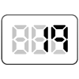

【019】現在の日付日時をコンソールに表示

- プロンプト例
JavaScriptで現在の日付日時をコンソールに表示する問題を５問作成して
Date オブジェクト
1. Dateオブジェクトとは？
Date は 日付と時刻を扱うための組み込みオブジェクト です。
const now = new Date();
これで 現在の日時 を取得できます。
内部的には
👉 1970年1月1日 00:00:00 UTC からの経過ミリ秒
で管理されています。
これを UNIX時間（エポックミリ秒） と呼びます。
2. Dateオブジェクトの作り方（生成方法）
① 現在日時を取得
const now = new Date();
② 指定した日時を作る
const d = new Date(2026, 1, 27, 10, 30, 0);
| 表示 | 実際の指定 |
|---|---|
| 1月 | 0 |
| 2月 | 1 |
| 12月 | 11 |
③ 文字列から生成
const d = new Date("2026-02-27T10:30:00");
ISO形式が安全です。
④ UNIX時間（ミリ秒）から生成
const d = new Date(1709000000000);
3. 取得系メソッド一覧（超重要）
| メソッド | 内容 |
|---|---|
| getFullYear() | 年 |
| getMonth() | 月（0〜11） |
| getDate() | 日 |
| getDay() | 曜日（0〜6） |
| getHours() | 時 |
| getMinutes() | 分 |
| getSeconds() | 秒 |
| getMilliseconds() | ミリ秒 |
| getTime() | UNIX時間(ms) |
曜日の数字対応
0: 日 1: 月 2: 火 3: 水 4: 木 5: 金 6: 土
現在の日付・時刻をコンソールに表示する練習問題
問題1（基本）
現在の日付と時刻を取得し、そのまま console.log() で表示してください。
出力例
2026-02-27T10:15:30.000Z
問題2（年月日だけ表示）
現在の年・月・日を
YYYY/MM/DD 形式で表示してください。
出力例
2026/02/27
問題3（時刻だけ表示）
現在の時・分・秒を
HH:MM:SS 形式で表示してください。
出力例
19:23:45
問題4（日本語表記）
現在の日時を、次の形式で表示してください。
出力例
2026年2月27日 19時23分45秒
問題5（曜日付き・応用）
現在の日時を**曜日つき（日本語）**で表示してください。
出力例
2026年2月27日（金）19時23分45秒
※ 曜日は「日, 月, 火, 水, 木, 金, 土」を使うこと。
✅ 解答例
問題1（現在の日時をそのまま表示）
const now = new Date(); console.log(now);
問題2（YYYY/MM/DD 形式）
const now = new Date(); const year = now.getFullYear(); const month = now.getMonth() + 1; // 月は0始まりなので +1 const day = now.getDate(); console.log(`${year}/${month}/${day}`);
問題3（HH:MM:SS 形式）
const now = new Date(); const hour = now.getHours(); const minute = now.getMinutes(); const second = now.getSeconds(); console.log(`${hour}:${minute}:${second}`);
※ 2桁表示にしたい場合は次の関数を使うと便利です。
const pad = n => n.toString().padStart(2, '0'); const now = new Date(); console.log(`${pad(now.getHours())}:${pad(now.getMinutes())}:${pad(now.getSeconds())}`);
問題4（日本語表記）
const now = new Date(); const year = now.getFullYear(); const month = now.getMonth() + 1; const day = now.getDate(); const hour = now.getHours(); const minute = now.getMinutes(); const second = now.getSeconds(); console.log(`${year}年${month}月${day}日 ${hour}時${minute}分${second}秒`);
問題5（曜日付き・応用）
const now = new Date(); const week = ['日', '月', '火', '水', '木', '金', '土']; const year = now.getFullYear(); const month = now.getMonth() + 1; const day = now.getDate(); const dayOfWeek = week[now.getDay()]; const hour = now.getHours(); const minute = now.getMinutes(); const second = now.getSeconds(); console.log(`${year}年${month}月${day}日（${dayOfWeek}）${hour}時${minute}分${second}秒`);
現場でのベストプラクティス
実務では：
- 日付取得・計算 → Date
- フォーマット → 自作 or ライブラリ
最近は Date 単体ではなく、
- dayjs
- date-fns
- luxon
などの 日時ライブラリ を使うことが多いです。
即戦力テンプレ
const pad = n => n.toString().padStart(2, '0'); function formatDate(d) { return `${d.getFullYear()}-${pad(d.getMonth()+1)}-${pad(d.getDate())} ` + `${pad(d.getHours())}:${pad(d.getMinutes())}:${pad(d.getSeconds())}`; } console.log(formatDate(new Date()));